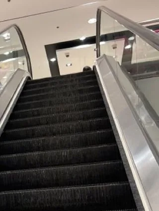

تنظيف المولات ومراكز التسوق بالرياض : عقود وجداول يومية
المول في الرياض يستقبل آلاف الزوار في اليوم، وكل زائر يمشي على نفس الأرضيات، ويلمس نفس الدرابزين، ويدخل نفس دورات المياه، ويقعد في نفس ساحة الطعام. ولو تأخرت جولة تنظيف ساعة وقت الذروة، تبان على المكان كله. ولهذا تنظيف مولات بالرياض يحتاج جدول مكتوب، وورديات موزعة على ساعات الحركة، وعقد واضح يحدد مين يسوي وش ومتى.
هالدليل موجه لمديري المرافق والتشغيل في المولات والمراكز التجارية. نمشي فيه على مناطق المول وكل منطقة واحتياجها، وعلى الجدول اليومي والأسبوعي والشهري والربع سنوي، وبعدين ندخل في عقود تنظيف للمولات بالرياض: وش مكونات العقد، ووش تسأل قبل التوقيع، ووش الأخطاء اللي تتكرر.
💡 هالمقال إرشادي عن التنظيف والتشغيل. الصياغة القانونية للعقد يراجعها الفريق القانوني في منشأتك، واشتراطات الجهات الرسمية تراجعها من الجهات المختصة مباشرة.
تنظيف مولات بالرياض: مساحة كبيرة وحركة ما توقف
المول يختلف عن أي منشأة ثانية في ثلاث أشياء: المساحة كبيرة ومقسمة على أدوار ومناطق، والزوار موجودين طول ساعات التشغيل، والذروة تتغير حسب اليوم والموسم. فالمكتب يتنظف بعد ما يطلع الموظفين، أما المول فالتنظيف يمشي والناس موجودين، وفريق التنظيف يشتغل بين الزوار.
وكل منطقة في المول لها نوع وسخ مختلف. المداخل تدخل غبار الشارع، وساحة الطعام فيها انسكابات وبقايا أكل، ودورات المياه تحتاج جولات متقاربة، والسلالم الكهربائية والزجاج تمسك البصمات، والمواقف فيها زيوت وغبار. وفي تنظيف مولات بالرياض، النظام الناجح يقسم المول لمناطق، ويحدد لكل منطقة تكرار ومسؤول وطريقة متابعة.
موقف في عطلة نهاية الأسبوع
تخيّل مدير مرافق في مول متوسط الحجم بالرياض. الأيام العادية تمشي بدون شكاوى، والجدول اللي ورثه من الإدارة السابقة يوزع العمال بالتساوي على ساعات اليوم. وفي أول خميس من الإجازة، بدأت توصله رسائل من الأمن ومن خدمة العملاء: دورات المياه في الدور الثاني فيها مناديل على الأرض، والسلال في ساحة الطعام مليانة، وفيه انسكاب عصير قدام السلم الكهربائي ما أحد شاله.
لما راجع الجدول، لقى إن وردية المساء فيها نفس عدد عمال الصباح، مع إن الزحمة تبدأ بعد العصر وتوصل ذروتها بعد العشاء. ولقى كمان إن جولات دورات المياه مكتوبة كل ساعتين، وفي الذروة تحتاج تكون أقرب من كذا. فالعمال موجودين، بس أغلبهم في الساعات الهادية. فجلس مع المشرف، وراجعوا سجلات الأسبوعين اللي فاتوا، ونقلوا جزء من عمال الصباح للمساء، وقربوا جولات الحمامات بعد العصر.
مناطق المول وكل منطقة واحتياجها
قبل ما تكتب أي جدول أو عقد، ارسم خريطة للمول وقسمها لمناطق. وكل منطقة لها تكرار تنظيف ومواد ومعدات تختلف عن غيرها:
المداخل والبوابات
المدخل أول مكان يشوفه الزائر، وأول مكان يدخل منه غبار الرياض. والأبواب الزجاجية تنفتح وتتسكر آلاف المرات، والزوار يلمسونها ويدفونها. فالمداخل تحتاج مسح للأرضية أكثر من مرة في اليوم، ومسح للأبواب الزجاجية والمقابض، وتنظيف لدواسات المدخل أو شفطها. والدواسة الجيدة عند المدخل تمسك جزء كبير من الغبار قبل ما ينتشر في الممرات، فخلها نظيفة ومشفوطة. وفي أيام الغبار، المداخل تحتاج جولة إضافية كل شوي.
الممرات والأرضيات الواسعة
الممرات في المول طويلة وواسعة، وأرضياتها غالبًا رخام أو بورسلان أو جرانيت لامع، وكلها تبين آثار الأقدام والبقع. والمسح اليدوي لهالمساحات ياخذ وقت طويل، ولهذا تنظيف الأرضيات الواسعة يعتمد غالبًا على مكاين غسيل وتنشيف للأرضيات، تشتغل قبل الفتح أو بعد الإغلاق. وخلال اليوم، يكفي مسح موضعي للبقع والانسكابات بمساحة ولوحة تحذير. وجلي الأرضيات أو تلميعها يكون دوري حسب نوع الحجر وحالته.
ساحة الطعام
ساحة الطعام أكثر منطقة تتوسخ في المول، وأكثر منطقة تحتاج حضور دائم لفريق التنظيف وقت الذروة. الطاولات تنمسح بعد كل زبون أو مجموعة، والكراسي تتعدل، والأرضية حول الطاولات وقدام المطاعم تتابع أول بأول، والسلال تتفرغ قبل ما تمتلي. والانسكابات هنا كثيرة، والأرض الزلقة خطر على الزوار، فلازم تنشال بسرعة ومعها لوحة تحذير. والمطاعم نفسها لها اشتراطاتها ومطابخها وتنظيفها الخاص، وعقدك يحدد وين تنتهي مسؤولية فريق المول ووين تبدأ مسؤولية المستأجر.
المحلات والمساحات المشتركة
كل محل مستأجر مسؤول غالبًا عن تنظيف محله من الداخل، والمول مسؤول عن المساحات المشتركة: الممرات، والجلسات، والنوافير، والأحواض، ومناطق الأطفال، وأماكن الصلاة. والمساحات المشتركة فيها كنب وكراسي جلوس تحتاج مسح يومي، ومناطق ألعاب الأطفال تحتاج تنظيف متكرر لأن الأطفال يلمسون كل شي. وفي تنظيف مولات بالرياض، الحدود بين مسؤولية المول ومسؤولية المستأجر لازم تكون مكتوبة، عشان ما تبقى منطقة ما أحد يعتبرها مسؤوليته، مثل الأرضية قدام باب المحل مباشرة.
المصاعد والسلالم الكهربائية
المصاعد والسلالم الكهربائية من أكثر الأسطح اللي تنلمس في المول. أزرار المصاعد، وجدرانها الداخلية المعدنية أو المرايا، والدرابزين المطاطي للسلالم، والحواف المعدنية، والزجاج الجانبي. ودرابزين السلم المتحرك ينمسح بالمادة اللي تناسبه، وبالتنسيق مع الصيانة حسب تعليمات الشركة المصنعة، لأن بعض المواد تضر المطاط أو تخليه زلق. وتنظيف درجات السلم الكهربائي نفسها والمسارات شغل يحتاج إيقاف السلم ومعدات خاصة، ويتنسق دائمًا مع صيانة السلالم، وما يسويه عامل التنظيف لحاله والسلم شغال.
الزجاج والدرابزين والواجهات الداخلية
المولات فيها زجاج كثير: الدرابزين الزجاجي على حواف الأدوار، والقواطع، والواجهات الداخلية، والقبب والفتحات العلوية أحيانًا. والإضاءة القوية في المول تخلي البصمات والخطوط تبان من بعيد. فالأجزاء اللي على مستوى اليد تنمسح يوميًا، وخصوصًا قرب السلالم والجلسات ومناطق الأطفال، والزجاج كامل يتنظف بشكل دوري. والأجزاء العالية تحتاج معدات رفع آمنة وعمالة مدربة على العمل في المرتفعات، وتنتظم خارج ساعات التشغيل.
المواقف
المواقف المسقوفة والمكشوفة لها وسخ مختلف: غبار ورمل، وبقع زيت من السيارات، وأوراق ومخلفات يرميها الزوار، وروايح أحيانًا في الزوايا. وتحتاج كنس دوري بمكاين كنس مناسبة للمساحات الكبيرة، وتفريغ سلال، وتنظيف لمداخل المصاعد في المواقف، لأنها أول شي يشوفه اللي جاي بسيارته. وبقع الزيت تحتاج مواد مخصصة لها. والمواقف المكشوفة تتأثر بالعواصف أكثر من أي منطقة ثانية.
المناطق الخلفية وممرات الخدمة
ممرات الخدمة، وغرف النفايات، ومناطق التحميل والتنزيل، وغرف العاملين، ومستودعات المول. الزائر ما يشوفها، لكن لو أهملت، تطلع منها الروايح والحشرات وتوصل للمناطق العامة. وغرف النفايات بالذات تحتاج جدول تفريغ وغسيل واضح، وتنسيق مع جهة نقل النفايات. وفي تنظيف مولات بالرياض، المناطق الخلفية النظيفة تسهل شغل الفريق كله، لأن العربات والمعدات تتحرك فيها طول اليوم.

دورات المياه العامة: جولات متقاربة وسجل متابعة
أغلب شكاوى النظافة في المولات تجي من دورات المياه. والزائر اللي يلقى حمام وسخ يحكم على المول كله، حتى لو باقي المناطق نظيفة. والحل في الجولات المتقاربة اللي تزيد وقت الذروة، وفي سجل متابعة معلق داخل كل دورة مياه، يوقع عليه العامل بعد كل جولة ويراجعه المشرف.
في كل جولة: تفريغ السلال، ومسح المغاسل والمرايا، وتنظيف المراحيض، ومسح الأرضية، وتعبئة الصابون والمناديل والورق، والتأكد من الروايح والتهوية. وأي عطل، مثل حنفية تنقط أو سيفون ما يشتغل، يتبلغ للصيانة فورًا. وهذا نموذج لسجل الجولات تعدله حسب جدولك:
| الوقت | المهام | اسم العامل | توقيع المشرف | ملاحظات أو أعطال |
|---|---|---|---|---|
| قبل الفتح | تنظيف كامل وتعبئة كل المستلزمات | |||
| الفترة الصباحية | جولة: السلال، المغاسل، الأرضية، المستلزمات | |||
| الظهر | جولة: السلال، المراحيض، الأرضية، المستلزمات | |||
| العصر | جولة كاملة مع فحص الروايح والتهوية | |||
| المساء (ذروة) | جولات أقرب: السلال، الأرضية، المناديل، الصابون | |||
| بعد العشاء (ذروة) | جولات أقرب مع تفريغ السلال قبل ما تمتلي | |||
| بعد الإغلاق | تنظيف عميق وتعقيم الأسطح وغسيل الأرضية |
وتكرار الجولات نفسه يحدده عدد الزوار وموقع دورة المياه. دورة المياه القريبة من ساحة الطعام أو المصلى تتوسخ أسرع من اللي في طرف الدور. وفي تنظيف مولات بالرياض، السجل يفيدك مرتين: يذكر العامل بالجولة، ويعطيك صورة عن الأوقات اللي تحتاج فيها تزيد العمالة.
مستلزمات ما تخلص وقت الذروة
أكثر شي يزعج الزائر في دورة المياه إنه يلقى الصابون أو المناديل أو الورق خالص. وخلص المستلزمات وقت الذروة غالبًا سببه إن التعبئة كانت الصبح بس. فخل مخزون صغير قريب من كل مجموعة دورات مياه، وخل التعبئة جزء من كل جولة مسائية كمان.
محتاج تنظيف احترافي؟
عندك مول أو مركز تسوق وتبي جدول تنظيف يغطي أوقات الذروة؟ فريقنا يعاين المكان ويقترح لك توزيع ورديات وجولات يناسب حركة الزوار عندك
الجدول اليومي: قبل الفتح وأثناء التشغيل وبعد الإغلاق
اليوم في المول ينقسم لثلاث فترات، ولكل فترة نوع شغل مختلف:
قبل الفتح
هذا وقت الشغل اللي يحتاج مساحة فاضية: غسيل الأرضيات بالمكاين في الممرات والمداخل، وتجهيز دورات المياه بالكامل، ومسح الزجاج والدرابزين، وتجهيز ساحة الطعام، وتفريغ كل السلال. والهدف إن أول زائر يدخل يلقى المكان جاهز.
- غسيل وتنشيف الأرضيات في الممرات والمداخل
- تنظيف دورات المياه كاملة وتعبئة المستلزمات
- مسح الأبواب الزجاجية والدرابزين والمقابض
- تجهيز ساحة الطعام: الطاولات والكراسي والأرضية
- تفريغ السلال في كل المناطق
- جولة على المصاعد ومداخل المواقف
أثناء التشغيل
خلال ساعات التشغيل، الشغل يتحول لجولات ومتابعة. العامل يمشي في منطقته، يشيل الانسكابات، ويفرغ السلال، ويمسح البصمات، ويتابع دورات المياه حسب السجل. والمسح الموضعي يكون بمساحة صغيرة ولوحة تحذير، بدون مكاين كبيرة في وسط الزحمة.
- جولات دورات المياه حسب السجل، وتقريبها وقت الذروة
- حضور دائم في ساحة الطعام وقت الغداء والعشاء
- متابعة الانسكابات فورًا مع لوحة تحذير
- تفريغ السلال قبل ما تمتلي
- مسح الدرابزين والزجاج في المناطق المزدحمة
- جولة على المداخل في أيام الغبار
بعد الإغلاق
بعد ما يطلع آخر زائر، يبدأ الشغل الثقيل: غسيل الأرضيات بالكامل، والتنظيف العميق لدورات المياه، وغسيل ساحة الطعام، وإخراج النفايات من الغرف الخلفية، وأي شغل يحتاج إيقاف سلم أو مصعد بالتنسيق مع الصيانة. ووردية الليل غالبًا أصغر عدد، لكنها تحتاج مكاين ومعدات أكثر.
- غسيل ساحة الطعام والأرضيات حول المطاعم
- التنظيف العميق لدورات المياه وغسيل أرضياتها
- غسيل الأرضيات بالمكاين في كل الأدوار
- تفريغ غرف النفايات وغسيلها حسب الجدول
- الزجاج العالي والأماكن اللي تحتاج معدات رفع
- تسليم ملاحظات الليل لمشرف الصباح
الجدول الأسبوعي والشهري والربع سنوي
فيه شغل ما يحتاج يتكرر كل يوم، لكنه لو انتسى يتراكم ويبان. وهذا جدول عام تعدله حسب حجم المول ونوع أسطحه:
| التكرار | المهام |
|---|---|
| أسبوعيًا | الزجاج الداخلي على مستوى اليد بالكامل، وتحت الجلسات والكنب، وحواف الأرضيات والزوايا، ومداخل المواقف والمصاعد، وغسيل حاويات النفايات |
| شهريًا | تلميع أو جلي الأرضيات حسب نوع الحجر، وتنظيف فتحات التكييف الظاهرة بالتنسيق مع الصيانة، وكنس وتنظيف المواقف بالكامل، وتنظيف الإضاءة الظاهرة اللي توصلها المعدات |
| ربع سنويًا | الزجاج العالي والقبب والواجهات الداخلية العالية، وتنظيف عميق لدرجات السلالم الكهربائية بالتنسيق مع الصيانة، وتنظيف المفروشات والكنب في الجلسات، وغسيل المواقف ومعالجة بقع الزيت |
| قبل المواسم | تنظيف عميق شامل لكل المناطق قبل رمضان والأعياد والإجازات |
والتكرار الحقيقي يتحدد بعد المعاينة وأول شهور التشغيل. فالمول اللي أرضيته رخام فاتح يحتاج جلي أكثر من اللي أرضيته جرانيت غامق، والمول اللي مداخله تفتح على شارع رئيسي يحتاج تنظيف زجاج أكثر. وفي تنظيف مولات بالرياض، الجدول الدوري يمنع إن المكان يتعب مع الوقت حتى لو التنظيف اليومي ماشي.
المعدات المناسبة لكل منطقة
المعدة الغلط تضيع وقت الفريق، وممكن تضر الأسطح. والمول يحتاج تشكيلة معدات، كل وحدة لها مكانها ووقتها:
- مكاين غسيل وتنشيف الأرضيات للممرات الواسعة، قبل الفتح وبعد الإغلاق
- مكاين جلي وتلميع حسب نوع الحجر، للشغل الدوري
- مكاين كنس للمواقف والساحات الكبيرة
- مكانس شفط بفلتر مناسب للدواسات والسجاد والمفروشات
- عربات تنظيف مقفلة فيها المواد والفوط بألوان مختلفة لكل منطقة
- أدوات زجاج بممسحة مطاط وعصي ممتدة للأجزاء المتوسطة
- معدات رفع آمنة للزجاج العالي، يشغلها عمال مدربين
والفوط الملونة تمنع إن الفوطة اللي استخدمت في دورة المياه توصل لطاولات ساحة الطعام. وخل لكل منطقة لون ثابت يعرفه كل العمال. والمعدات تحتاج صيانة وتنظيف بعد كل وردية، لأن المكينة الوسخة تنشر الوسخ بدل ما تشيله. وفي عقود تنظيف مراكز التسوق بالرياض، قائمة المعدات ونوعها وحالتها جزء من التقييم قبل التوقيع وأثناء التشغيل.
السلامة أثناء التنظيف والزوار موجودين
فريق التنظيف في المول يشتغل بين ناس، وفيهم أطفال وكبار سن وعربات أطفال وكراسي متحركة. والأرض المبللة من أكثر أسباب التزحلق في الأماكن العامة. فأي مسح أثناء التشغيل يكون بلوحة تحذير واضحة، وعلى جزء صغير من الممر، مع ترك مسار ناشف للمشي. والمكاين الكبيرة ما تشتغل وسط الزحمة. والمواد الكيميائية تنحفظ في عرباتها وغرفها، وما تنترك على الأرض أو قرب مناطق الأطفال. وأسلاك المكاين ما تمتد في مسارات المشي. وفي تنظيف مولات بالرياض، تدريب العامل على السلامة جزء من الشغل نفسه، لأن إصابة زائر بسبب أرض مبللة مشكلة أكبر بكثير من بقعة.
- لوحة تحذير مع كل مسح أثناء التشغيل
- ترك مسار ناشف للمشي جنب المنطقة المبللة
- المكاين الكبيرة قبل الفتح أو بعد الإغلاق فقط
- المواد في عرباتها المقفلة وبعيدة عن الأطفال
- عدم مد الأسلاك في مسارات الزوار
التنسيق مع الأمن والصيانة وخدمة العملاء
فريق التنظيف ما يشتغل لحاله. الأمن أول من يشوف الانسكاب أو الحادث، وخدمة العملاء أول من تستقبل الشكوى، والصيانة تصلح الحنفية أو توقف السلم. ولو ما فيه قناة تواصل سريعة بين هالفرق، البلاغ يتأخر ويبقى الانسكاب على الأرض. فخل قناة تواصل مباشرة بين المشرف والأمن وخدمة العملاء، سواء بأجهزة لاسلكي أو مجموعة تواصل أو نظام بلاغات. وفي تنظيف مولات بالرياض، سرعة الاستجابة تعتمد على هالتنسيق بقدر ما تعتمد على عدد العمال. وفي عقود تنظيف مراكز التسوق بالرياض، طريقة التنسيق مع الفرق الثانية تنكتب في العقد أو ملحقه.
تسليم واستلام بين الورديات
المول يشتغل بأكثر من وردية، وكل وردية تسلم اللي بعدها. ولو ما فيه تسليم منظم، الملاحظات تضيع: عطل في دورة مياه، أو بقعة ما طلعت، أو منطقة تحتاج متابعة. فخل التسليم مكتوب ومختصر: وش انتهى، ووش باقي، ووش الأعطال اللي تبلغت ولسه ما انصلحت. والمشرف الطالع يمشي مع المشرف الداخل على المناطق الحساسة قبل ما يمشي. وفي عقود تنظيف للمولات بالرياض، التسليم بين الورديات جزء من التقارير اللي تتفق عليها.
غبار الرياض والمداخل والمواقف المكشوفة
الرياض فيها أيام غبار وعواصف رملية، والمول بأبوابه الكثيرة ومواقفه المكشوفة يتأثر فيها مباشرة. والغبار يدخل مع كل فتحة باب، ويقعد على الأرضيات اللامعة ويبان مع الإضاءة، ويتراكم على الزجاج الخارجي والمظلات. وفي هالأيام، الجدول العادي ما يكفي:
- جولات إضافية على المداخل ودواساتها
- مسح الأرضيات قرب الأبواب أكثر من مرة
- كنس المواقف المكشوفة ومداخل المصاعد فيها بعد العاصفة
- تنظيف الزجاج الخارجي القريب من الأرض في أقرب وقت مناسب
- متابعة فتحات التكييف الظاهرة في المداخل
وفي تنظيف مولات بالرياض، خل خطة جاهزة لأيام الغبار يعرفها المشرف ويبدأ فيها بدون ما ينتظر تعليمات. وفي عقود تنظيف للمولات بالرياض، الأفضل يكون فيه بند يوضح كيف يتعامل المقاول مع الأيام اللي بعد العواصف.
مناطق الأطفال والجلسات والمصليات
مناطق ألعاب الأطفال في المولات من أكثر الأماكن اللي تحتاج عناية، لأن الأطفال يلمسون كل شي ويقعدون على الأرض. والألعاب والأرضيات الإسفنجية والحواجز تنمسح أكثر من مرة في اليوم بمواد مناسبة لها، وتنظف بعمق بعد الإغلاق. والجلسات في الممرات فيها كنب وكراسي تتعرض لانسكابات وبقع، وتحتاج مسح يومي وتنظيف دوري للمفروشات. والمصليات وأماكن الوضوء تحتاج جولات متقاربة قبل أوقات الصلاة وبعدها، لأن الحركة فيها تزيد في أوقات محددة. وفي تنظيف مولات بالرياض، هالمناطق تحتاج جدول خاص فيها بتكرار أعلى من الممرات.
الروايح والتهوية
الزائر يحس بالريحة قبل ما يشوف الوسخ. وروايح ساحة الطعام، أو دورات المياه، أو غرف النفايات، ممكن توصل للممرات لو التهوية ضعيفة أو التنظيف متأخر. والمعطرات تغطي الريحة لفترة، لكنها ما تحل سببها. فابدأ بمصدر الريحة: مصارف دورات المياه، وحاويات النفايات، والسجاد أو المفروشات اللي فيها انسكابات قديمة. ونسق مع الصيانة على التهوية وأنظمة الشفط. وفي تنظيف مولات بالرياض، الريحة المقبولة في المداخل والممرات علامة إن المناطق الخلفية ماشية صح.
عقود تنظيف للمولات بالرياض: مكونات العقد الأساسية
العقد يكتب توقعات الإدارة على شكل التزامات. والعقد الغامض يفتح باب للخلاف من أول شهر: الإدارة تتوقع شي، والمقاول فهم شي ثاني. وهذي المكونات الأساسية اللي تحتاج تكون واضحة في عقود تنظيف للمولات بالرياض، بشكل عام، وتبقى الصياغة القانونية مسؤولية الفريق القانوني عندك:
نطاق العمل
نطاق العمل يحدد المناطق اللي يشملها العقد بالاسم: المداخل، والممرات، وساحة الطعام، ودورات المياه، والمصاعد والسلالم، والزجاج لأي ارتفاع، والمواقف، والمناطق الخلفية. ويحدد كمان المناطق اللي برا العقد، مثل داخل المحلات المستأجرة، ومطابخ المطاعم، والواجهات الخارجية لو لها عقد منفصل. وفي عقود تنظيف للمولات بالرياض، كل منطقة ما تنذكر في النطاق تتحول لنقطة خلاف بعدين.
الورديات وعدد العمالة مقابل المساحة
العقد يحدد الورديات وساعاتها، وعدد العمال والمشرفين في كل وردية، وتوزيعهم على المناطق. والعدد المناسب ما يطلع من المساحة بس. فساحة الطعام الصغيرة ممكن تحتاج عمال أكثر من ممر طويل، والذروة تحتاج عدد أكبر من الصباح الهادي. والأفضل إن العدد يتحدد بعد معاينة ودراسة لحركة الزوار، وإن العقد يسمح بتعديل التوزيع في المواسم. وفي عقود تنظيف مراكز التسوق بالرياض، اسأل المقاول كيف وصل للعدد اللي اقترحه.
مسؤولية المعدات والمواد
مين يوفر مكاين غسيل الأرضيات؟ ومين يوفر معدات الرفع للزجاج العالي؟ ومين يشتري المنظفات؟ ومين يوفر مستلزمات دورات المياه مثل الصابون والمناديل والورق؟ هالأسئلة لازم يكون لها جواب مكتوب. وكمان مين مسؤول عن صيانة المعدات وتبديلها لو خربت، ووين تنخزن داخل المول. وفي عقود تنظيف للمولات بالرياض، خل قائمة المواد المسموحة لكل نوع سطح ملحقة بالعقد، عشان ما تنستخدم مادة تضر الرخام أو مطاط السلالم.
الإشراف والتقارير
مين المشرف المسؤول في كل وردية؟ وكيف تتواصل معه الإدارة؟ ووش التقارير اللي يرفعها؟ والتقرير اليومي البسيط يكفي غالبًا: الجولات اللي تمت، والملاحظات، والأعطال اللي تبلغت، والحوادث. والتقرير الشهري يجمع هالبيانات ويبين الاتجاهات. وفي عقود تنظيف مراكز التسوق بالرياض، وجود مشرف ثابت يعرف المول يفرق كثير عن مشرف يتغير كل شهر.
مؤشرات الأداء والتقييم الشهري
مؤشرات الأداء تقيس جودة الشغل بسجلات ونتائج تفتيش تتفقون عليها مع المقاول. وأمثلة على مؤشرات عامة تقدر تتفق عليها:
- الالتزام بجدول الجولات حسب السجلات
- عدد الشكاوى المتعلقة بالنظافة من الزوار والمستأجرين
- نتيجة جولات التفتيش الدورية من إدارة المول
- سرعة الاستجابة للانسكابات والبلاغات
- الالتزام بحضور العدد المتفق عليه في كل وردية
- إنجاز الشغل الدوري الأسبوعي والشهري في وقته
والتقييم الشهري يكون اجتماع بين الإدارة والمقاول، يراجعون فيه المؤشرات والملاحظات، ويتفقون على التحسينات. وفي عقود تنظيف للمولات بالرياض، طريقة التقييم ونتائجه تكون محددة في العقد، والصياغة يراجعها الفريق القانوني.
الطوارئ والانسكابات
انسكاب كبير في ممر، أو تسرب ماء من سقف، أو عاصفة غبار قوية، أو حادث في دورة مياه. العقد يحدد كيف يستجيب المقاول في هالحالات: مين يتبلغ، وخلال كم يوصل الفريق حسب ما تتفقون، وهل فيه فريق طوارئ خارج الورديات العادية. وكمان يحدد التنسيق مع الأمن والصيانة. وفي عقود تنظيف مراكز التسوق بالرياض، بند الطوارئ يبين لك هل عند المقاول فريق وخطة جاهزة خارج الورديات.
المدة والتجديد
مدة العقد، وطريقة تجديده، وفترة التجربة لو فيه، وشروط الإنهاء من الطرفين، وطريقة تعديل النطاق لو توسع المول أو تغيرت ساعات التشغيل. وفي عقود تنظيف للمولات بالرياض، فترة تجربة في البداية تعطي الطرفين فرصة يتأكدون إن التوزيع والجدول مناسبين قبل الالتزام الطويل. وكل هالبنود صياغتها النهائية يراجعها الفريق القانوني في منشأتك.
الملحقات اللي تخلي العقد قابل للتطبيق
نص العقد يحدد الالتزامات بشكل عام، والملحقات تنزلها لتفاصيل يقدر المشرف يشتغل عليها كل يوم. وكثير من الخلافات تنحل بالرجوع لملحق واضح بدل تفسير بند عام. ومن الملحقات المفيدة:
- خريطة المول مقسمة لمناطق، مع اسم كل منطقة وحدودها
- الجدول اليومي والأسبوعي والشهري والربع سنوي لكل منطقة
- توزيع الورديات والعمالة على المناطق
- قائمة المعدات اللي يوفرها كل طرف
- قائمة المواد المسموحة لكل نوع سطح
- نماذج السجلات والتقارير وقوائم التفتيش
- طريقة احتساب مؤشرات الأداء
وفي عقود تنظيف للمولات بالرياض، الملحقات تتحدث مع أي تعديل في النطاق أو الجدول، عشان تبقى مطابقة للواقع. وفي عقود تنظيف مراكز التسوق بالرياض، راجع الملحقات مع المقاول بند بند قبل التوقيع، وخل الفريق القانوني يتأكد من ربطها بنص العقد.
رأي الزوار والمستأجرين
الزائر والمستأجر هم اللي يعيشون نتيجة التنظيف كل يوم. والشكاوى اللي توصل خدمة العملاء، والتقييمات اللي يكتبها الزوار عن المول، وملاحظات المستأجرين في اجتماعاتهم مع الإدارة، كلها مصادر تبين لك وين الخلل. فاجمعها شهريًا، وصنفها حسب المنطقة والوقت، وراجعها مع المقاول. وفي تنظيف مولات بالرياض، تكرار نفس الملاحظة في نفس المنطقة إشارة إن الجدول هناك يحتاج تعديل. وفي تنظيف مولات بالرياض أيضًا، المستأجر اللي يحس إن الممر قدام محله نظيف يكون أقل تذمر وأكثر تعاون.
عقود تنظيف مراكز التسوق بالرياض: وش تسأل قبل التوقيع
قبل ما توقع، اجلس مع المقاول واسأله أسئلة تبين لك هل فهم المول فعلًا:
- هل سويتوا معاينة كاملة للمول، بما فيها المواقف والمناطق الخلفية؟
- كيف حددتوا عدد العمال في كل وردية؟ وهل أخذتوا الذروة في الحسبان؟
- وش المعدات اللي بتوفرونها؟ وهل تناسب أنواع الأرضيات عندنا؟
- مين المشرف المسؤول؟ وهل بيكون ثابت؟
- كيف تدربون العمال على السلامة والتعامل مع الزوار؟
- وش خطتكم في المواسم ورمضان والأعياد؟
- كيف تستجيبون للطوارئ خارج الورديات؟
- وش التقارير اللي بترفعونها؟ وكل متى؟
- كيف تتعاملون مع غياب عامل في وردية؟
- هل عندكم خبرة في منشآت بنفس الحجم والنوع؟
واكتب أجوبتهم، لأنها تفيدك لما تقارن بين أكثر من مقاول. وفي عقود تنظيف مراكز التسوق بالرياض، المقاول اللي يسأل هو كمان أسئلة عن حركة الزوار وساعات الذروة ونوع الأسطح، غالبًا فاهم الشغل.
كيف تقارن بين العروض
لما توصلك أكثر من عرض، المقارنة بالسعر الإجمالي بس تضللك، لأن كل عرض ممكن يكون مبني على نطاق مختلف. فقبل ما تقارن، تأكد إن كل العروض مبنية على نفس النطاق ونفس المناطق ونفس الورديات. وبعدها قارن بين:
- عدد العمال والمشرفين في كل وردية وتوزيعهم على المناطق
- المعدات اللي بيوفرها كل مقاول ونوعها
- مين يوفر المواد والمستلزمات في كل عرض
- طريقة الإشراف والتقارير
- الخطة المقترحة للمواسم والطوارئ
- خبرة المقاول في منشآت مشابهة
وفي عقود تنظيف مراكز التسوق بالرياض، العرض اللي ما يشرح كيف وصل لعدد العمال يحتاج أسئلة إضافية. وفي عقود تنظيف للمولات بالرياض، اطلب من كل مقاول جدول توزيع مكتوب بالمناطق، عشان تقارن الشي بنفس الشي.
أول شهور العقد
في أول شهور التشغيل مع مقاول جديد يتثبت النظام. الفريق يتعرف على المول، والمشرف يتعرف على المناطق والذروة، والإدارة تتأكد إن الجدول المكتوب يمشي على الأرض. وفي هالفترة:
- جولة تعريفية للمشرفين والعمال على كل المناطق قبل البدء
- تسليم واضح لخريطة المناطق والجداول وقائمة المواد المسموحة
- اجتماعات متابعة متقاربة في البداية، وبعدين شهرية
- مراجعة توزيع الورديات بعد أول أسابيع حسب السجلات والشكاوى
- تثبيت قناة التواصل مع الأمن والصيانة وخدمة العملاء
وفي عقود تنظيف مراكز التسوق بالرياض، فترة البداية هي أنسب وقت لتعديل التفاصيل الصغيرة قبل ما تصير عادة. وفي عقود تنظيف للمولات بالرياض، خل ملاحظات هالفترة مكتوبة، لأنها تفيدك في التقييم والتجديد بعدين.
أخطاء شائعة في عقود التنظيف
- نطاق عام بدون تحديد المناطق بالاسم، فتصير مناطق مثل المواقف أو ممرات الخدمة محل خلاف
- توزيع العمالة بالتساوي على ساعات اليوم بدون مراعاة الذروة
- عدم تحديد مين يوفر المواد والمستلزمات والمعدات
- غياب مؤشرات أداء واضحة، فيصير التقييم بالانطباع
- عدم وجود بند للطوارئ والانسكابات الكبيرة
- عقد بدون مرونة للمواسم، فيضطر الطرفين يتفاوضون من جديد كل رمضان
- عدم التنسيق بين عقد التنظيف وعقد الصيانة في السلالم والمصاعد
- الاعتماد على صياغة جاهزة بدون مراجعة الفريق القانوني
وفي عقود تنظيف للمولات بالرياض، أغلب هالأخطاء تنكشف في أول شهرين من التشغيل. فخل مراجعة بعد أول فترة، وعدل اللي يحتاج تعديل قبل ما يتراكم.
تقسيم المسؤوليات بين المول والمستأجرين
المول فيه طرفين: إدارة المول اللي مسؤولة عن المساحات المشتركة، والمستأجرين اللي مسؤولين عن محلاتهم. والخلاف يصير غالبًا في المناطق اللي بينهم: الأرضية قدام باب المحل، والواجهة الزجاجية للمحل من برا، ومخلفات المحلات اللي تنحط في الممرات، ونفايات المطاعم. فخل الحدود مكتوبة في عقود الإيجار أو لائحة المستأجرين، وخلها نفسها في عقد التنظيف. وفي عقود تنظيف مراكز التسوق بالرياض، وضوح هالحدود يمنع إن فريق المول يشتغل في شي مو من نطاقه، أو يترك شي يحسبه على المستأجر. وفي عقود تنظيف للمولات بالرياض، حدد كمان مين يتولى نفايات المحلات من الممر لغرفة النفايات.
جولات التفتيش والجودة
التقارير اللي يرفعها المقاول مهمة، لكن الإدارة تحتاج تشوف بعينها. فخل جولات تفتيش دورية من إدارة المرافق، بقائمة فحص ثابتة لكل منطقة: الأرضيات، والزجاج، ودورات المياه، والسلال، والمستلزمات، والروايح. وخل بعض الجولات في وقت الذروة، لأن المول قبل الفتح غالبًا نظيف. وسجل نتيجة كل جولة، وراجعها في الاجتماع الشهري. وفي تنظيف مولات بالرياض، جولة التفتيش وقت الذروة تبين لك المول مثل ما يشوفه الزائر. وفي عقود تنظيف مراكز التسوق بالرياض، نتائج التفتيش جزء من مؤشرات الأداء.
- قائمة فحص ثابتة لكل منطقة
- جولات في أوقات مختلفة، منها وقت الذروة
- تسجيل الملاحظات مع الوقت والمكان
- مراجعة النتائج في الاجتماع الشهري مع المقاول
- متابعة إن الملاحظات انحلت قبل الجولة الجاية
تدريب العمال والتعامل مع الزوار
عامل التنظيف في المول يتعامل مع الزوار طول اليوم. يسألونه عن مكان دورة المياه، أو يطلبون منه يشيل انسكاب، أو يمرون جنبه وهو يمسح. وطريقة تعامله جزء من تجربة الزائر. فالتدريب يشمل طريقة الشغل والمواد والسلامة، ويشمل كمان الاحترام، والمظهر، والزي النظيف، وطريقة إرشاد الزائر، ومتى يحول السؤال للأمن أو خدمة العملاء. وفي تنظيف مولات بالرياض، العامل المدرب يشتغل بهدوء بين الزوار بدون ما يزعجهم. وفي تنظيف مولات بالرياض كمان، تدريب العمال الجدد يتكرر مع كل تغيير في الفريق.
النفايات والفرز
المول ينتج نفايات كثيرة كل يوم: كراتين المحلات، وبقايا ساحة الطعام، ونفايات دورات المياه، ومخلفات المواقف. وإدارتها جزء من التنظيف: سلال كافية في الممرات وساحة الطعام، وتفريغ قبل ما تمتلي، ونقل للغرف الخلفية في أوقات أقل زحمة، وعربات مقفلة ما تسرب. ولو المول يفرز الكراتين أو المواد القابلة لإعادة التدوير، خل الفرز واضح للعمال والمستأجرين. وفي تنظيف مولات بالرياض، غرفة النفايات المنظمة تمنع الروايح والحشرات من أساسها.
لما يتوسع المول أو تتغير ساعات التشغيل
المول ما يبقى على حاله. ممكن ينفتح جناح جديد، أو تزيد ساعات التشغيل في المواسم، أو تتحول منطقة لساحة فعاليات. وكل تغيير يأثر على حجم شغل التنظيف. فالعقد يحتاج طريقة واضحة لتعديل النطاق والعمالة بدون ما تبدأ التفاوض من الصفر. وفي عقود تنظيف للمولات بالرياض، خل بند يحدد كيف ينضاف نطاق جديد وكيف ينحسب. وفي عقود تنظيف مراكز التسوق بالرياض، الفعاليات المؤقتة داخل المول تحتاج اتفاق منفصل على التنظيف قبلها وأثناءها وبعدها.
البلاغات والأنظمة الرقمية
بعض المولات تستخدم أنظمة بلاغات رقمية، مثل رمز يمسحه الزائر في دورة المياه عشان يبلغ عن مشكلة، أو تطبيق يسجل فيه العامل جولاته. وهالأنظمة تسرع الاستجابة وتعطيك بيانات عن الأوقات والمناطق اللي تحتاج اهتمام أكثر. لكنها تحتاج متابعة: والزائر اللي يبلغ وما أحد يستجيب له يطلع منزعج أكثر من قبل. وفي عقود تنظيف مراكز التسوق بالرياض، لو فيه نظام رقمي، حدد في الاتفاق مين يستقبل البلاغات وكيف تنقاس سرعة الاستجابة.
المواسم وأوقات الذروة في الرياض
حركة المولات في الرياض تتغير كثير خلال السنة. رمضان يقلب ساعات الذروة، والحركة تزيد بعد الإفطار وتمتد لوقت متأخر. والأعياد فيها زحمة عالية أيام متتالية. والإجازات المدرسية تزيد العوائل والأطفال. والفعاليات والمواسم الترفيهية في المدينة ترفع عدد الزوار فجأة. وكل هالأوقات تحتاج جدول مختلف عن الأيام العادية.
- قبل رمضان: تنظيف عميق شامل، وإعادة توزيع الورديات على ساعات المساء والليل
- قبل الأعياد: زيادة العمالة في ساحة الطعام ودورات المياه والمداخل
- الإجازات: اهتمام أكبر بمناطق الأطفال ودورات المياه العائلية
- بعد كل موسم: تنظيف عميق ثاني يرجع المكان لوضعه
والأيام اللي بعد العواصف الرملية تحتاج تجهيز خاص: المداخل والمواقف المكشوفة والزجاج الخارجي تتأثر أول. وفي تنظيف مولات بالرياض، المواسم تكشف هل الجدول مرن أو لا. وفي عقود تنظيف مراكز التسوق بالرياض، خل بند واضح لزيادة العمالة في المواسم، بدل ما تتفاوض كل مرة.
متى تحتاج الاستعانة بشركة متخصصة؟ وبماذا تسأل
بعض المولات عندها فريق تنظيف داخلي، وبعضها يتعاقد مع مقاول. والتعاقد مع جهة متخصصة يكون مناسب لما يكون المول كبير ويحتاج ورديات على مدار ساعات التشغيل، أو لما تحتاج معدات غسيل أرضيات ورفع للزجاج العالي ما تبي تشتريها، أو لما تبي تتفرغ إدارة المرافق للتشغيل بدل إدارة العمالة.
وقبل ما تختار أي شركة تنظيف بالرياض أو مقاول للمول، اطلب منهم معاينة كاملة قبل العرض، واسأل عن خبرتهم في المنشآت التجارية الكبيرة، وعن طريقتهم في الإشراف والتقارير، وعن جاهزيتهم للمواسم والطوارئ. واطلب منهم يشرحون لك توزيع الورديات اللي اقترحوه، ووش يصير لو غاب عامل. وخل الفريق القانوني يراجع العقد قبل التوقيع.
وفي مؤسسة نقاء للتنظيف، نبدأ مع إدارة المول بمعاينة نشوف فيها المناطق وأنواع الأسطح وحركة الزوار، وبعدها نقترح جدول وتوزيع ورديات يناسب الذروة عندكم. وفي تنظيف مولات بالرياض، نتفق من البداية على حدود العمل ومؤشرات المتابعة.
أسئلة شائعة عن تنظيف المولات وعقودها
الخاتمة
المول في الرياض ما يقفل أبوابه للتنظيف، ولهذا التنظيف فيه يمشي مع الزوار. والنظام الناجح يبدأ بتقسيم المول لمناطق، وجدول يومي يفرق بين قبل الفتح وأثناء التشغيل وبعد الإغلاق، وجدول دوري للشغل الثقيل، وجولات متقاربة لدورات المياه وقت الذروة. وبعدها يجي العقد اللي يثبت كل هذا: نطاق واضح، وورديات، ومعدات، وإشراف، ومؤشرات، وطوارئ، ومدة.
ولو تبي معاينة لمولك أو مركزك التجاري وعرض مخصص يناسب ساعات الذروة عندك، فريق مؤسسة نقاء يخدم المنشآت التجارية في الرياض، ويرتب معك موعد يناسبك.
✨ جدول تنظيف يغطي الذروة
نسق معنا معاينة للمول أو المركز التجاري، ونقترح لك جدول وتوزيع ورديات يناسب حركة الزوار
محتاج تنظيف احترافي؟
تواصل معنا لتنسيق معاينة للمول وعرض مخصص يناسب مناطقه وساعات الذروة فيه
- ورديات موزعة على ساعات الذروة
- جولات دورات المياه وساحة الطعام
- تنظيف الأرضيات والزجاج قبل الفتح وبعد الإغلاق
- خدمة في كل أحياء الرياض